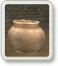
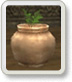
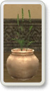
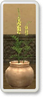
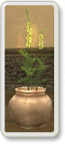
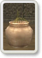

栽培とは
モグハウスに
植木鉢
をレイアウトし、そこに
種
を植えることで 栽培を始める事ができます。
栽培を始めると、モーグリの世話によって植物はじっくり時間をかけて成長し、やがて花を咲かせてあなたの目を楽しませるでしょう。
さらに育てつづけると植物は光り輝き、様々なアイテムが実を結びます！
栽培で使用するアイテム
栽培するためには「植木鉢」と「種」が必ず必要になります。
それぞれのアイテムはモーグリの管轄下に置くため、必要な分を
モグ金庫に預けなければなりません
。
植木鉢
栽培に必要な植木鉢はお店に売っています。
全ての国で販売されていますが、その材質は国によって違います。 どの材質の植木鉢でも植物は健やかに育ちますが、収穫物によっては収穫量に違いが生まれる場合があります。
植木鉢はモグハウスに
最大10個
までレイアウトできます。 レンタルハウスにレイアウトすることはできませんので、新たに植木鉢をレイアウトしたいときは 一度本国のモグハウスに戻らなければなりません。
種
種は植物系モンスターが持っているようです。
種の形から植物の種類を判断するしかないため、一般的に「謎の○○の種」と呼ばれます。
これを一粒植木鉢に植えることで、植物としての成長を開始します。
クリスタル
必須アイテムではありませんが、植物が弱った時に肥料として植物を元気付ける目的で使用することができます。 クリスタルを肥料として与えた場合、成長速度や収穫内容に変化が見られることがあります。
成長過程
植物の成長段階は大まかに次の6段階に分けることが出来ます。

【 種 】
種を植えた状態です。
見た目、何の変化もありません。

【発 芽】
種が発芽し、緑が現れた状態です。
種によっては枯れる危険性がある段階です。

【成長期】
芽が伸びて、植物として大きく枝葉を伸ばしている状態です。
枯れる危険性が常に付きまといます。

【 花 】
成長が進み、美しい花をつけて見るものの目を楽しませます。
熟成期が近いことを示します。

【熟成期】
花が燐光を放つ、その植物の最も美しい時です。
収穫が可能です。

【枯 死】
植物の最後。
一度枯れてしまうと、それを復活するすべはありません。
世話
栽培メニューを実行すると、
レイアウトした植木鉢のリスト
があらわれます。
このリストから見たい植木鉢をセレクトすると、
植物の成長段階に応じたコマンドメニュー
が表示されます。
以下は栽培の全工程を通して選択する機会がある、全てのコマンドです。
実際はこの中からいくつかがメニューに現れることになります。
種をまく
植木鉢に種をまきます。
種をまくためには、予めモグ金庫に植えるための種を格納しておく必要があります。
一度種を植えると、その種を取り戻す事はできません。
様子を見る
植物の調子を見ます。
レンタルハウスから実行した場合はモーグリが代わりに見てくれます。
様子を見ることで植物の枯死を回避することができるので、最低でも一日一回は様子を見ましょう。
ドライ化する
植物をドライフラワーにして、見かけの状態で固定します。
一度ドライ化してしまうと、もう成長も枯死もしなくなります。
部屋のインテリアとしたいときに実行すると良いでしょう。
クリスタルを与える
植物が弱っている時に、モグ金庫に蓄えたクリスタルを植物に肥料として与え、植物の活性化を促します。
副作用としてクリスタルによる活性化を行った場合、普段出来ないようなアイテムが出来る可能性が生まれます。
ただしそれは枯れる事はないものの、必ず良い方向に影響が出るとは限りません。
植物によっては成長速度に激しい変化が生まれる場合もあります。
収穫する
植物がふわふわと光り輝くと収穫の合図です。
収穫を行うとなんらかのアイテムが手に入ります。中には栄養の偏りからか、本来植物にならないものが収穫できる事もあります。 収穫を行うと植物は植木鉢から
撤去
されます。
収穫できたアイテムは
モグ金庫に格納
されます。
モグ金庫がいっぱいの場合は収穫せずにそのままの状態を維持します。
栽培をやめる
栽培を中止し、植木鉢から植物を撤去します。
戻る
植木鉢選択メニューに戻ります。
レンタルハウスからの栽培
栽培はレンタルハウスからでも世話を行う事が可能です。
この場合、栽培メニューを実行すると、モーグリが独自の魔法でモグハウスに移動し、様子を見に行ってくれます。
モーグリの報告を頼りに、コマンドを選択してください。種まきや収穫なども同様に行えます。
ただし次のような制約は発生します。
◎レンタルハウスではレイアウトで植木鉢を置く事はできないので、新たに植木鉢の数を変更する事はできません。
◎プレイヤーはレンタルハウスにいるので、植物の様子を目で見て確認する事はできません。
栽培メニューを閉じれば、モーグリは再びあなたの元に戻ってきます。
ログアウト時の栽培の進行
あなたがヴァナ・ディールからログアウトしても、植物はその間も成長を続けています。
長時間ログインし続ける必要は全くありません。
>> close <<